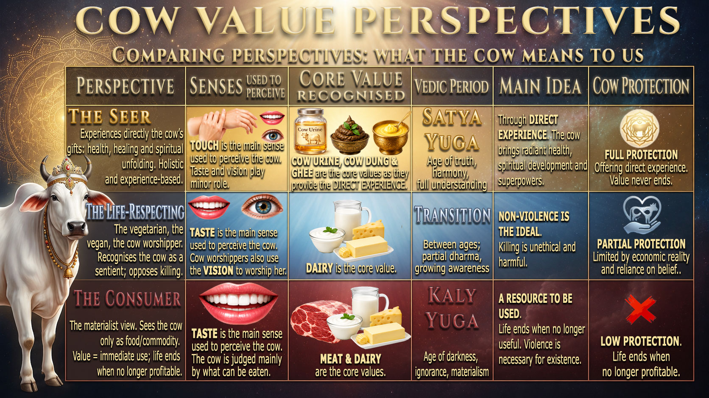

Beyond Meat and Milk
Most people see the cow through only one or two layers of understanding. But there is a deeper perspective that changes everything: why we protect her, how we value her, and what she truly offers humanity.
We can divide our relationship with the cow into three distinct categories, each showing a different way of seeing, using, and protecting this being.
Many people today view the cow simply as a source of meat and milk. In this view, she is not seen as a feeling, sentient being — just a resource. When she stops producing milk, or if she is male and not useful for work, her life is taken.
This approach gives little reason to protect cows long-term. Their life is only as valuable as what they produce for food.
For many traditional communities, especially within Hindu culture, the cow is seen as a sentient being worthy of respect and reverence. She may be protected, cared for, and even worshipped. Yet even here, the highest value assigned to her remains milk.
Because the highest value is still milk, protection remains fragile — it is hard to convince those in Category 1 to change their ways, since both groups agree milk is the main benefit.
A new understanding is emerging — one that goes far beyond meat and milk. This view recognises that the cow offers much more: ghee, cow urine and cow dung as powerful substances for physical healing, mental balance, and spiritual development.
From this perspective, every part of her natural output is valuable. Even bulls and older cows become precious, because their life is no longer measured only by milk or meat.
If killing a cow means losing a source of natural medicine, wellness, and spiritual support, it becomes much harder to justify ending her life. She becomes a lifelong asset, not a short-term product.
For farmers, this opens a new, sustainable income stream. Instead of relying only on milk sales, they can offer purified products derived from the cow's natural output — giving value to every animal, including males and seniors.
Instead of relying only on tradition or stories, people can experience the benefits directly. When they feel improvements in their own well-being, the cow's sacred and valuable nature becomes real, not just something heard from others.
What the cow means to us — at a glance.

This understanding draws from ancient texts, traditional knowledge, and emerging research. While mainstream science is still studying and verifying these uses, many people around the world report positive results from responsible, traditional applications. This page presents these views as part of a broader conversation — one that invites us to look deeper, respect all life, and find new ways to live in harmony with nature.